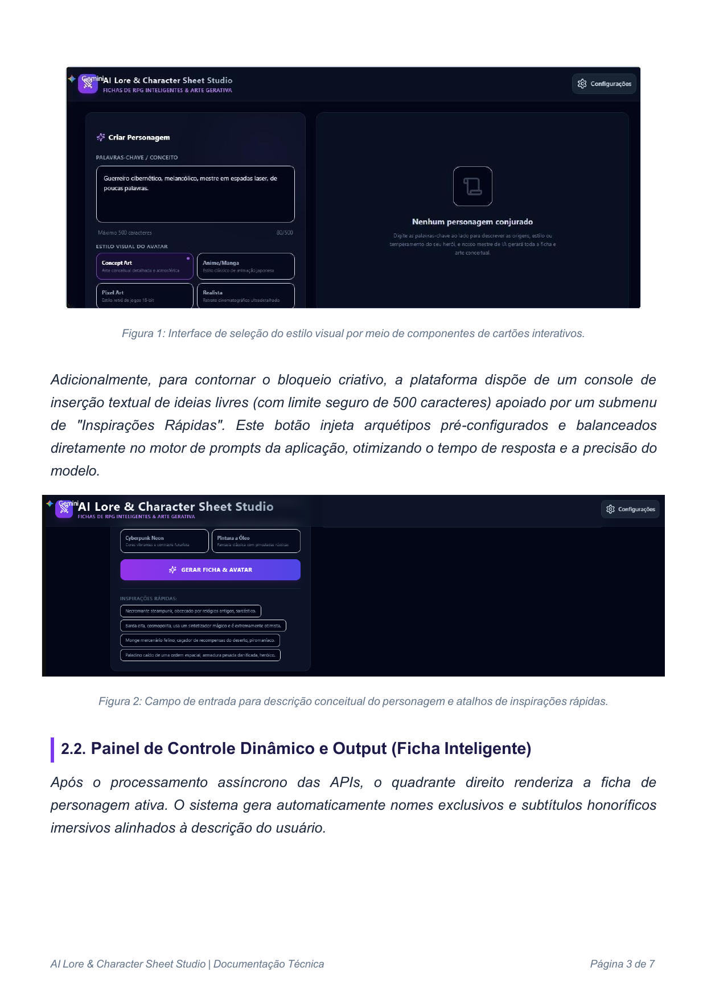
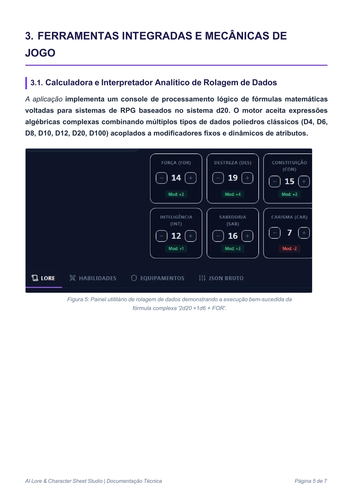

🎯 Problema
Criação tradicional de fichas pode exigir leitura de regras complexas e tempo de preparação, afastando novos jogadores.
Documentação técnica ilustrada e aplicação web para geração de fichas de RPG, narrativas de personagens e arte conceitual por Inteligência Artificial.
O projeto nasceu para reduzir a barreira inicial de criação de personagens de RPG. A aplicação interpreta uma descrição simples, gera uma ficha estruturada, cria uma história de fundo e materializa um avatar em diferentes estilos visuais.
Criação tradicional de fichas pode exigir leitura de regras complexas e tempo de preparação, afastando novos jogadores.
Uso de IA Generativa para acelerar lore, atributos, habilidades, equipamentos e visual conceitual.
O MVP demonstra integração de APIs, engenharia de prompts, interface reativa e documentação técnica em contexto acadêmico.
A versão disponibilizada funciona como uma aplicação estática compatível com GitHub Pages e executada diretamente no navegador.

Seleção de estilos e inspirações rápidas.
Avatar, atributos, HP, MP e XP.

Fórmulas com dados e modificadores.
Mapeamento do problema, público-alvo e fluxo das APIs de IA.
Definição de atributos, modificadores, status e lógica de ficha.
Engenharia de prompts e uso de retorno JSON estruturado.
Criação de prompts de imagem por estilo artístico e renderização do avatar.
Testes de calculadora de dados, armazenamento local, ficha e exportação.
Este repositório foi preparado para publicar a pasta docs/ como site do projeto. O MVP funcional fica disponível em docs/app/index.html.